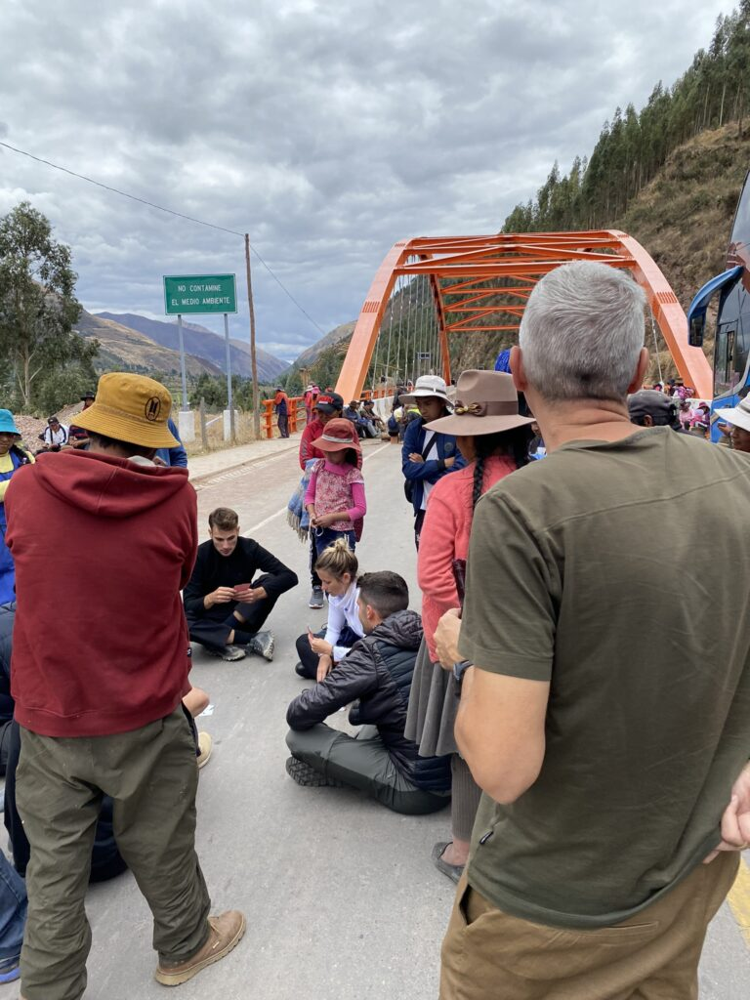
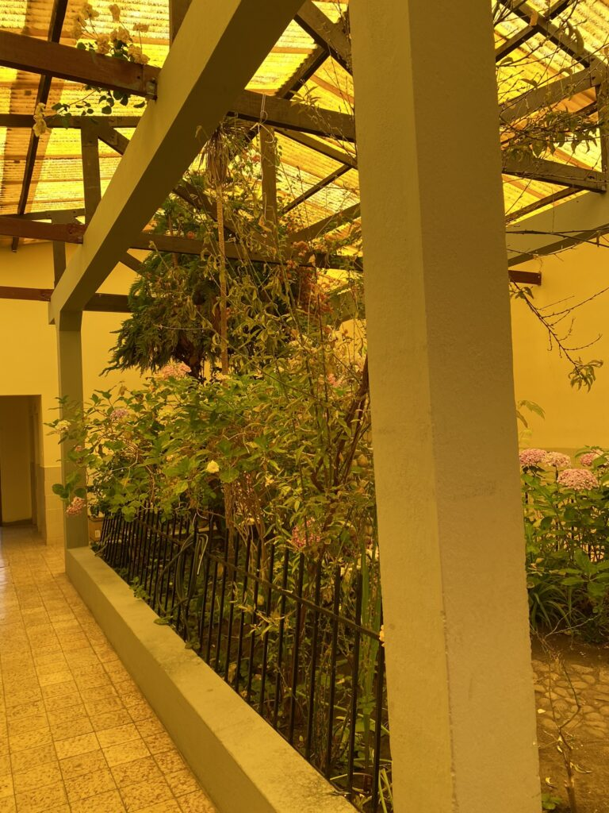

Peru is bereikt en dat mag toch een prestatie genoemd worden. Het gemak van een vaste reispartner (en wat voor één) gaat in rook op, terwijl een nieuwe fase nog meer mogelijkheden biedt.
We laten La Paz, en daarmee bijna Bolivia, achter ons. We stoppen bij Copacobana om de volgende dag de boot te pakken naar Isla del Sol, op het overdreven hoge Titicacameer. Ik vind in Copacobona een ziekenhuis, die naast een botanishe tuin welgeteld één dokter huist. Na wat houtje-touwtje-Spaans en een niet erg overuigend onderzoek, krijg ik een atibioticapillen. Met de eerste dosis achter de kiezen kies ik op het eiland voor een korte klim naar de zonsondergang. Luc gaat voor de grote ronde over het eiland met een frisse duik als beloning. Als hij kreeftig terugkomt kan ik hem nog één keer flink de les lezen over dat hij zich in moet smeren, voordat onze paden bijna scheiden.
Na een pittige klim langs bepakte ezels en uitgestorven restaurantjes beland ik in een pitoresk café van stenen muren en een rieten dak op het hoogste punt (4000 meter), met uitzicht op de bewolkte zonsondergang. De setting is uit te tekenen: Amerikaanse countrymuziek, gratis coca-thee, maar bier voor 8 euro en luidruchtige Franse twintigers, in overtal vertegenwoordigd, roddelen er lustig op los. De eigenaars zijn gourmetchefs en vullen het rommelige café met onweerstaanbare dampen.
We verlaten het Copacobana met op het oog een overbrugbare reis richting Cusco, de culterele hoofdstad van Peru. Na een soepele grensovergang begint het gezeur. Vanwege hoge brandstofprijzen en druk op de huidige president zijn er landelijk wegblokkades, waarschijnlijk ook op onze route. Daarom vertrekt onze bus pas laat in de avond, in de hoop dat ‘s nachts de demonstranten opgehoepeld zijn, maar die staan ons vrolijk om 04:00 ‘s ochtends op te wachten op het bruggetje dat essentieel is voor de route. We zijn slechts een uurtje rijden verwijderd van Cusco, maar zitten muurvast in een door een grote bergketen omringd dorp. Zonder enige indicatie te geven wanneer we verder kunnen, zitten de bewoners op de stenen en houten blokkades en rennen ze opstandig het hele dorp door. Wel geven enigen ons vriendelijk een rijstepap van quinoa, toastjes en sterke sap uit jerrycans.

Zelfs de wc’s zijn gesloten dus beperken we ons tot de natuur voor onze behoeften. In een grasveld naast een kronkelige bergpad vinden we een bewusteloze boer. Terwijl we constateren dat er nog leven in hem huist, wijst in het dorp een hectische democratische stemming in ons nadeel uit: we mogen er niet langs. Gestranden en bewoners mengen zich voor potjes kaart met publiek en ergens klinkt wk-commentaar. Pas na dertien uur wachten mogen we erdoor. Omdat iedereen in de urine is gaan staan die vanuit de toiletbus op het wegdek stroomde, is de geur zurig. Maar we rijden. Een paar uur later komen aan in het beloofde land.
Om 11 uur ‘s ochtends zitten we aan het pils voor een matige pot van Oranje. De culinaire opsteker die we die avond ervaren overtreft gelijk al het voedsel dat we in Bolivia hebben geproefd. In een restaurant met Japanse invloeden zijn de sushi en ceviche het hoogtepunt van de week. De stad met een overzichtelijk centrum en oude ruïnes was het het centrum van het oude inca-rijk en nu dé plek voor tochten naar de heilige vallei.
De volgende ochtend nemen we afscheid: de rode beer trekt het groene woud in om drie weken om drie weken op een zelfvoorzienende permacultuurboerderij mee te draaien. Ons avontuur was me een absoluut genoegen, tot in de eeuwigheid.
